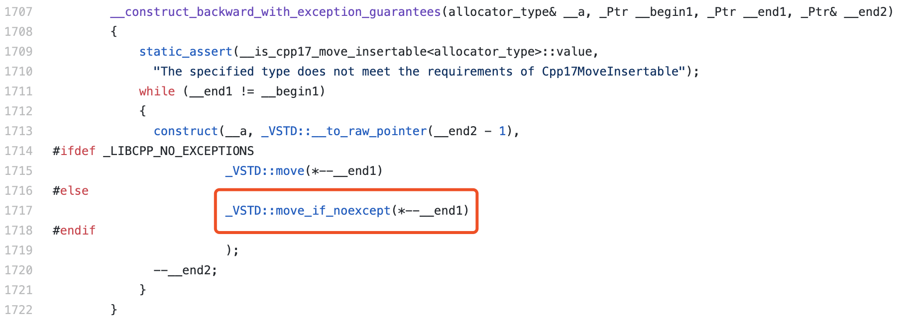

C++ 中的移动构造与 noexcept
相信对 C++ 语言熟悉的同学应该都知道，C++ 在它的第11个版本中加入了新的名为“移动构造函数”的构造函数类型。通过使用移动构造函数，我们可以在对象进行“复制”时，来直接“窃取”拷贝对象所保有的一些资源。比如，已经在原对象中分配的堆内存、文件描述符，以及 IO 流等。但是在大多数情况下，当我们在代码中声明类的移动构造函数时，都通常会使用 “noexcept” 关键字来修饰对应的移动构造函数，那么这样做是为什么呢？或者说这样做有什么样的好处呢？今天我们就来探讨一下这个问题。
“noexcept”，形如其名，使用它修饰的函数被标记为不会在执行过程中抛出异常。通常我们可以用这两种不同的方式来使用这个关键字。第一种方式，我们可以简单地将 “noexcept” 关键字放在函数声明的后面，这样该函数便会被标记为不会抛出异常。如下代码所示。
void excpt_func() noexcept;第二种方式，我们可以为 “noexcept” 关键字额外提供一个常量表达式作为其参数，若这个常量表达式的值为 “true”，那么函数就会被标记为不会抛出异常，反之亦然。如下代码所示。
constexpr bool suppressExcept = true;
void excpt_func() noexcept (suppressExcept);与通常我们使用 “try…catch” 结构来捕获异常所不同的是，使用 “noexcept” 关键字标记的函数,在它抛出异常时，编译器会直接调用名为 std::terminate 的方法来中断程序的执行。因此，在某种程度上可以有效地阻止异常的传播与扩散。
不仅如此，在 C++11 中，类结构隐式自动声明的或者由程序员主动声明的，不带有任何修饰符的析构函数，都会被编译器默认带上 “noexcept(true)” 标记，以表示这个析构函数不会抛出异常。不过，这样做是由于，通常来说对于析构函数在类结构中的定位，我们希望它的执行结果只能够具有两种状态：成功地将类对象的资源释放、或者是由于某些原因，导致类资源无法被释放，从而直接中断程序的运行。
抛出异常意味着对于某种错误的情况，我们不知道应该进行怎样的处理，因此，编译器会将其抛出给上层调用者来进行处理。但是，析构函数的执行失败通常会导致比如：资源泄漏，或者空指针等潜在问题的出现，因此，相较于继续让程序运行，一个更合理的方式，就是直接终止程序的运行。
另一方面要注意的是，如果一个类，它父类的析构函数或其成员函数被标记为可抛出异常，那么这个类的析构函数就会被默认标记为可抛出异常，也就是受到了“污染”。
接下来，我们再看下 “noexcept” 关键字与移动构造函数之间的关系。移动构造函数，是 C++11 标准中新加入的一种构造函数，通过这个构造函数，我们可以在对象进行“复制”时，直接“移动”原对象已经分配好的资源，进而省去诸如重新分配内存、再拷贝的过程。

如上图所示，在 STL 中大多数的容器类型，都会在 “resizing”，也就是调整容器大小时，调用容器元素的移动构造函数来移动资源。但 STL 为了保证容器类型的内存安全，在大多数情况下，只会调用被标记为不会抛出异常，即被标记为 “noexcept” 或 “noexcept(true)” 的移动构造函数，否则，便会调用其拷贝构造函数来作为代替。
这是因为，如果在资源的移动过程中抛出了异常，那么那些正在被处理的原始对象数据，便可能会因为异常而丢失。而在拷贝构造函数中，由于进行的是资源拷贝操作，原始数据不会被更改，因此是否会抛出异常，并不会影响数据最终的正确性。类似地，我们也可以通过为移动构造函数添加 “noexcept” 关键字的方式，来将它标记为不会抛出异常。使用方式与类成员函数类似。
MyClass(MyClass &&res) noexcept;除此之外，C++11 还为我们提供了众多标准库方法以用于检测类的各种构造函数状态。我们以如下代码为例，来介绍下常用的几个检测函数。
#include <iostream>
#include <type_traits>
using namespace std;
struct ClassA {
int n;
ClassA(ClassA&&) = default;
};
struct ClassB {
int n;
// 标记为可能抛出异常；
ClassB(ClassB&&) noexcept(false) {};
};
int main() {
cout << boolalpha
<< is_move_constructible<ClassA>::value << endl
<< is_trivially_move_constructible<ClassA>::value << endl
<< is_nothrow_move_constructible<ClassA>::value << endl
<< is_move_constructible<ClassB>::value << endl
<< is_trivially_move_constructible<ClassB>::value << endl
<< is_nothrow_move_constructible<ClassB>::value << endl;
}其中，第一个函数 is_move_constructible，用于检测类型是否可以被移动构造，如果对应类的移动构造函数被声明为 “delete”，那么这个函数的实例值便为 “false”。第二个函数 is_trivially_move_constructible，它用于检测类型是否具有普通的移动构造函数，为了满足“普通”这一特点，我们需要保证这个类型符合多项约束条件，比如，类型没有虚函数，没有虚基类，没有任何不稳定的非静态成员，等等。最后第三个函数 is_nothrow_move_constructible，同它的名称一样，它的功能是用来检测类是否具有不会抛出异常的移动构造函数。当条件成立时，这个函数实例所对应的值便为 “true”。
合理地使用移动构造函数，能够使我们开发的应用程序，享受到“资源移动”代替“资源拷贝”所带来的高性能。但是，不合理的使用方式，就会导致应用程序的中断，甚至是会在带有诸如内存泄漏、数据丢失等潜在风险的情况下，继续运行。因此，我们需要在设计类结构时，提前考虑到类的各种使用场景、数据在各对象间的流动方向，以及对应的处理方式。除此之外，还可以通过设置规范，也就是 “convention” 的方式，来主动规避可能带来的数据和代码问题，比如说，严格禁止在代码中使用拷贝构造函数以及拷贝赋值函数、使用 “placement-new” 来初始化堆对象，进而避免数据的拷贝和移动，等等。